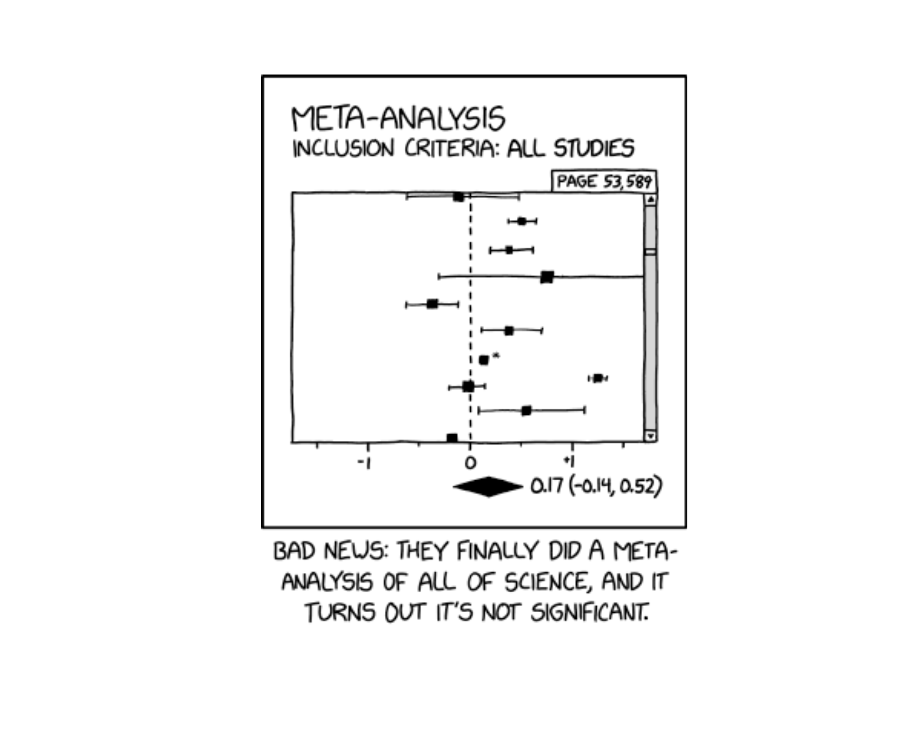
Lesson 35: ANOVA I
Calendar
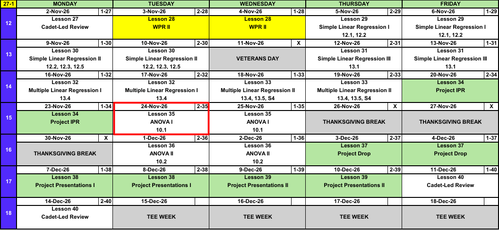
Admin
- Project Products: Lesson 37 (3, 4 Dec)
- Project starter code: Lesson 32
What We Did: Lessons 29 to 33
NoteKey Concepts from Lesson 29
- Least squares: choose \(\hat{\beta}_0\), \(\hat{\beta}_1\) to minimize \(\sum (y_i - \hat{y}_i)^2\)
- \(\hat{\beta}_1 = \dfrac{\sum (x_i - \bar{x})(y_i - \bar{y})}{\sum (x_i - \bar{x})^2}\), \(\hat{\beta}_0 = \bar{y} - \hat{\beta}_1\bar{x}\)
- Slope: change in the mean of \(y\) for a one unit increase in \(x\)
- Predict only inside the range of the \(x\) data
NoteKey Concepts from Lesson 30
- Slope test: \(H_0: \beta_1 = 0\), \(t = \hat{\beta}_1 / s_{\hat{\beta}_1}\), df \(= n - 2\)
- \(r^2 = 1 - \text{SSE}/\text{SST}\): proportion of variation in \(y\) explained by the line
- R:
lm(y ~ x),summary(),predict()
NoteKey Concepts from Lesson 31
- Model: \(Y = \beta_0 + \beta_1 x + \varepsilon\), \(\varepsilon \sim N(0, \sigma^2)\), independent
- LINE: Linear, Independent, Normal, Equal variance
- Residual plot (residuals vs fitted): no pattern checks L, constant spread checks E
- Histogram of residuals: checks N
- Independence: comes from how the data were collected
NoteKey Concepts from Lesson 32
- Model: \(Y = \beta_0 + \beta_1 x_1 + \beta_2 x_2 + \cdots + \beta_k x_k + \varepsilon\)
- Interpret \(\hat{\beta}_j\): holding all else constant, a one unit increase in \(x_j\) is a \(\hat{\beta}_j\) unit increase in \(y\), on average
- Not significant? Drop it and refit
- Categorical with 3 levels: 2 indicator variables; each coefficient is a difference from the baseline level
- R:
lm(y ~ x1 + x2 + x3)
NoteKey Concepts from Lesson 33
- Not significant? Drop the predictor and refit
- Categorical: each indicator compares one level to the baseline; keep the variable if any level is significant
- \(R^2\): proportion of the variation in \(y\) explained by the model; adjusted \(R^2\) penalizes extra predictors
- LINE: same plots as Lesson 31,
plot(model, which = 1)andhist(model$residuals)
What We’re Doing: Lesson 35
Objectives
- State the assumptions and hypotheses for single-factor (one-way) ANOVA. (SLO 5)
- Compute the \(F\) statistic from the ANOVA table (sums of squares and mean squares) and carry out the \(F\) test. (SLO 4)
- Interpret the \(P\)-value and conclude whether the population means differ. (SLO 5)
Required Reading
Devore 10.1
Break!
Reese
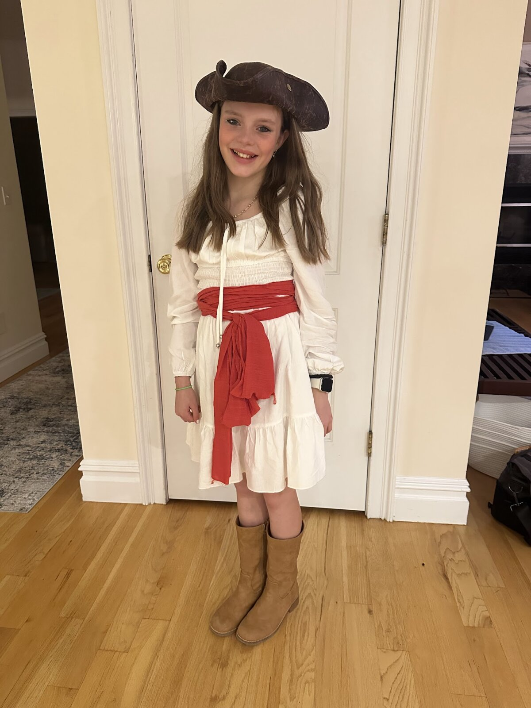
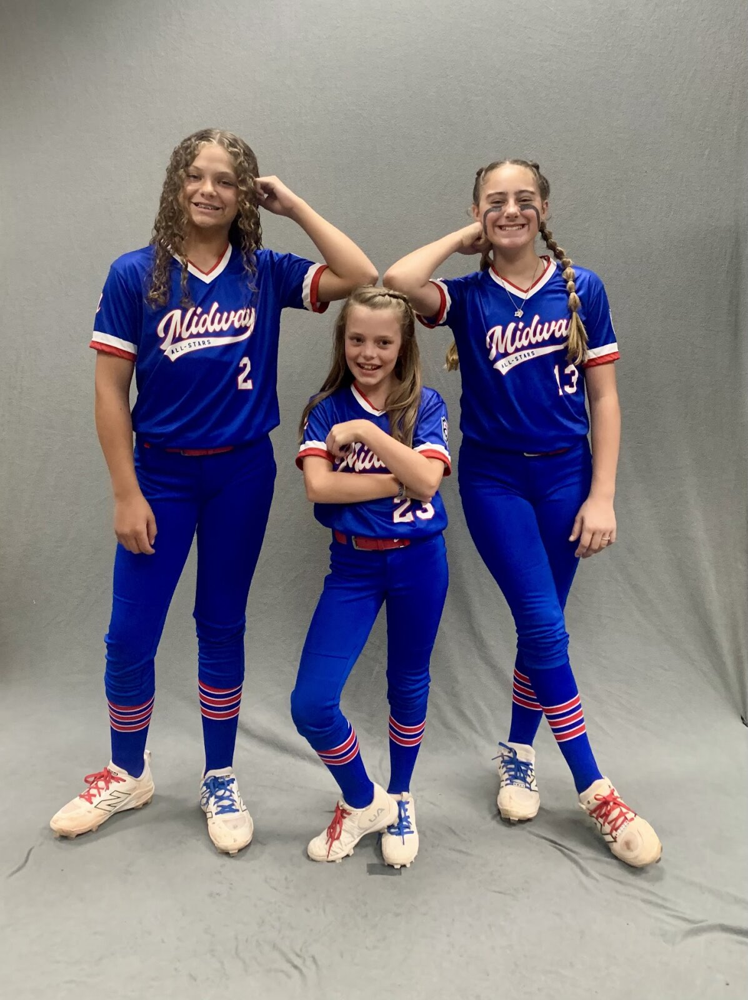
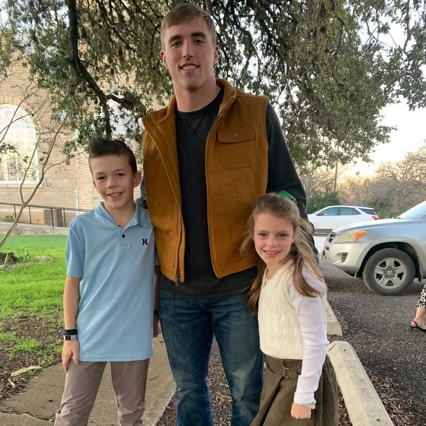
DMath Intramurals
DMath Volleyball!!

Math vs USMAPS
NotePreviously 3-3
5-3
The Takeaway for Today
NoteKey Concepts from Lesson 35
- Goal: compare \(I \ge 3\) population means with one test
- \(H_0: \mu_1 = \mu_2 = \cdots = \mu_I\) versus \(H_a\): at least two of the \(\mu_i\)’s differ
- \(F = \text{MSTr}/\text{MSE}\): between-group variability over within-group variability
- P-value:
1 - pf(F, I-1, n-I), always the upper tail - ANOVA says whether the means differ, not which ones (Lesson 36)
Two Companies
AFT scores, 25 Soldiers each from A Co and B Co. Do the companies differ?
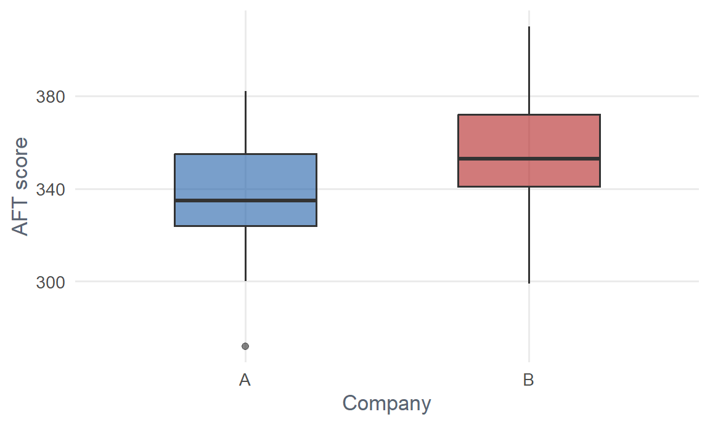
A [1] 308 335 370 302 328 333 348 324 380 327 340 355 320 304 375 272 352 331 355
[20] 341 382 300 370 379 330B [1] 299 372 345 380 367 378 368 387 353 341 345 317 337 346 354 350 311 339 408
[20] 376 410 352 358 355 330t.test(A, B, paired = F)
Welch Two Sample t-test
data: A and B
t = -2.1235, df = 47.796, p-value = 0.03892
alternative hypothesis: true difference in means is not equal to 0
95 percent confidence interval:
-32.4753184 -0.8846816
sample estimates:
mean of x mean of y
338.44 355.12 One test, one \(\alpha\). Done.
Now Four Companies
A battalion has A, B, C, and HHC. Does any company differ?
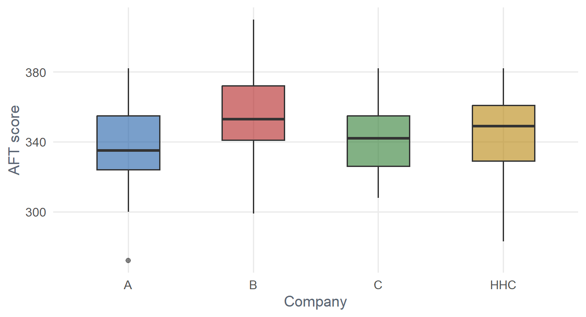
NoteHow many two-sample t tests?
\[\binom{4}{2} = 6\]
| Comparison | P-value | Reject at 0.05? |
|---|---|---|
| A vs B | 0.039 | Yes |
| A vs C | 0.532 | No |
| A vs HHC | 0.457 | No |
| B vs C | 0.070 | No |
| B vs HHC | 0.130 | No |
| C vs HHC | 0.841 | No |
The Problem: False Positives Pile Up
Each test has a 5% chance of a false positive when \(H_0\) is true.
Two tests. \(A\) = false positive on test 1, \(B\) = false positive on test 2. \(P(A) = P(B) = 0.05\), independent.
\[ \begin{aligned} P(\text{at least one false positive}) &= 1 - P(A' \cap B') \\ &= 1 - P(A')\,P(B') \\ &= 1 - (0.95)(0.95) \\ &= 0.0975 \end{aligned} \]
Six tests.
\[P(\text{at least one false positive}) = 1 - (0.95)^6 = 0.265\]
WarningMultiple Comparisons
More tests means a higher chance of at least one false positive. Run enough of them and something will look significant by chance.
NoteOne fix: Bonferroni
Shrink each test’s \(\alpha\): \(\alpha^* = 0.05 / 6 = 0.0083\).
Reject now? None of the six. Very conservative: real differences get missed.
A Better Approach: One Question, One Test
Are any of the population means different?
That test is ANOVA (analysis of variance).
What Does “Different Means” Look Like?
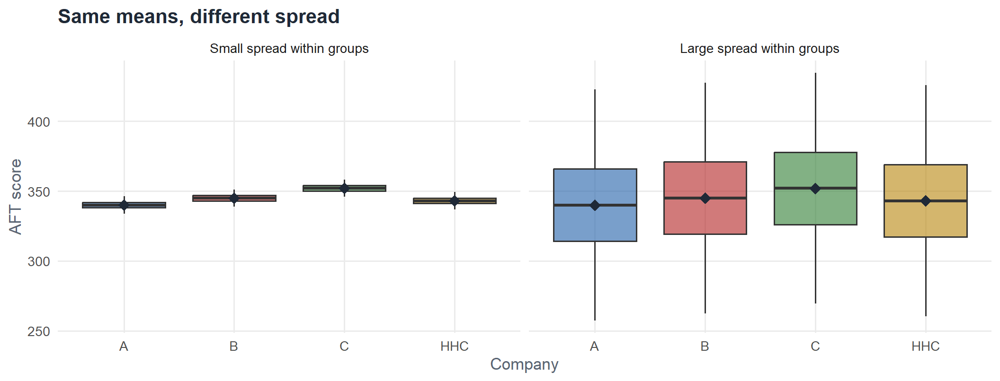
Same means. Left: tiny spread, the gaps look real. Right: huge spread, the same gaps disappear into the noise.
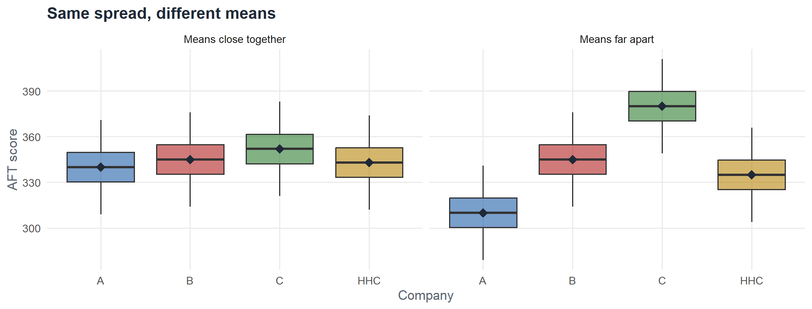
Same spread. Left: means close, probably no real difference. Right: means far apart, real differences.
TipTwo things decide it
- How far apart the group means are (between)
- How noisy each group is (within)
Hypotheses
ImportantSingle-Factor ANOVA
\[ \begin{aligned} H_0&: \mu_1 = \mu_2 = \cdots = \mu_I \\ H_a&: \text{at least two of the } \mu_i\text{'s differ} \end{aligned} \]
For the AFT data, \(I = 4\):
\[ \begin{aligned} H_0&: \mu_A = \mu_B = \mu_C = \mu_{HHC} \\ H_a&: \text{at least two of the company means differ} \end{aligned} \]
Building the \(F\) Statistic
Notation: \(I\) = number of groups, \(J_i\) = observations in group \(i\), \(n\) = total observations, \(\bar{y}_{i\cdot}\) = mean of group \(i\), \(\bar{y}_{\cdot\cdot}\) = grand mean (all the data).
For the AFT data: \(I = 4\), \(n = 100\), \(\bar{y}_{\cdot\cdot} = 345.10\)
| Company | \(J_i\) | \(\bar{y}_{i\cdot}\) |
|---|---|---|
| A | 25 | 338.44 |
| B | 25 | 355.12 |
| C | 25 | 342.80 |
| HHC | 25 | 344.04 |
Between Groups
How far does each group mean sit from the grand mean?
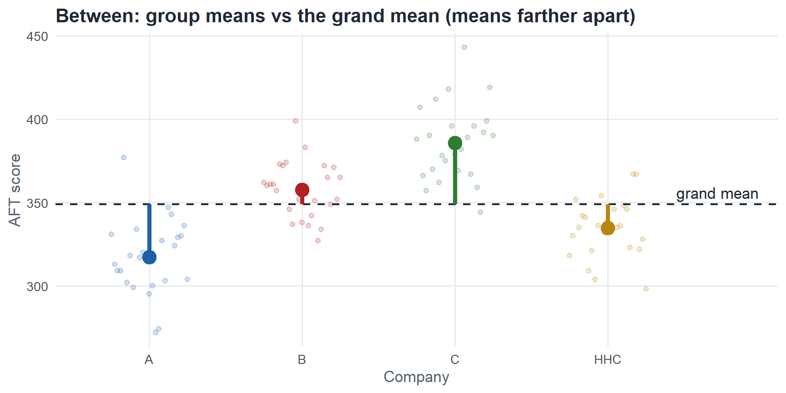
Treatment = group. Here, the treatments are the four companies.
- SSTr: treatment sum of squares
- MSTr: mean square for treatments
\[\text{SSTr} = \sum_i J_i(\bar{y}_{i\cdot} - \bar{y}_{\cdot\cdot})^2 \qquad \text{MSTr} = \frac{\text{SSTr}}{I - 1}\]
\[\text{SSTr} = 25(338.44 - 345.10)^2 + 25(355.12 - 345.10)^2 + 25(342.80 - 345.10)^2 + 25(344.04 - 345.10)^2 = 3779.2\]
\[\text{MSTr} = \frac{3779.2}{3} = 1259.75\]
Within Groups
How far does each observation sit from its own group mean?
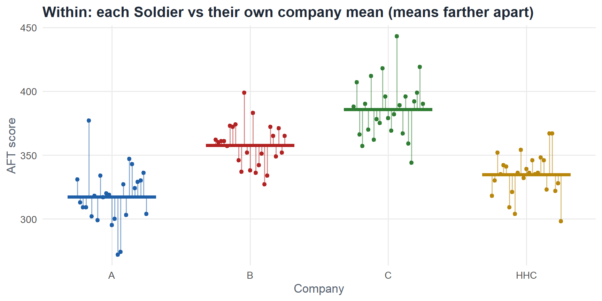
Error = the variation left over inside each group.
- SSE: error sum of squares
- MSE: mean square for error
\[\text{SSE} = \sum_i \sum_j (y_{ij} - \bar{y}_{i\cdot})^2 \qquad \text{MSE} = \frac{\text{SSE}}{n - I}\]
\[\text{SSE} = 59731.8 \qquad \text{MSE} = \frac{59731.8}{96} = 622.21\]
The Ratio
\[F = \frac{\text{MSTr}}{\text{MSE}} = \frac{\text{between}}{\text{within}} = \frac{1259.75}{622.21} = 2.025\]
NoteWhat does F tell us?
\(F\) is a distance measure: how big the differences between the groups are, relative to the differences within the groups. The larger the between differences relative to the within differences, the more evidence the groups are actually different.
- \(F\) near 1: the gaps between means look like ordinary noise. Consistent with \(H_0\).
- \(F\) much bigger than 1: the means are farther apart than noise explains. Evidence for \(H_a\).
The ANOVA Table
SST: total sum of squares, how far every observation sits from the grand mean. \(\text{SST} = \text{SSTr} + \text{SSE}\).
Everything above, in one table:
ImportantANOVA Table
| Source | Sum of Squares | df | Mean Square | \(F\) |
|---|---|---|---|---|
| Treatments | \(\text{SSTr} = \sum_i J_i(\bar{y}_{i\cdot} - \bar{y}_{\cdot\cdot})^2\) | \(I - 1\) | \(\text{MSTr} = \dfrac{\text{SSTr}}{I-1}\) | \(\dfrac{\text{MSTr}}{\text{MSE}}\) |
| Error | \(\text{SSE} = \sum_i \sum_j (y_{ij} - \bar{y}_{i\cdot})^2\) | \(n - I\) | \(\text{MSE} = \dfrac{\text{SSE}}{n-I}\) | |
| Total | \(\text{SST} = \text{SSTr} + \text{SSE}\) | \(n - 1\) |
AFT data:
| Source | Sum of Squares | df | Mean Square | \(F\) |
|---|---|---|---|---|
| Treatments (Company) | 3779.2 | 3 | 1259.75 | 2.025 |
| Error | 59731.8 | 96 | 622.21 | |
| Total | 63511.0 | 99 |
How big does \(F\) need to be?
The P-Value
When \(H_0\) is true, \(F \sim F_{I-1,\, n-I}\). Big \(F\) is evidence against \(H_0\), so the P-value is always the upper tail.
ImportantANOVA P-Value
\[\text{P-value} = P(F_{I-1,\,n-I} \ge F)\]
1 - pf(F, I-1, n-I)1 - pf(2.025, 3, 96)[1] 0.1155218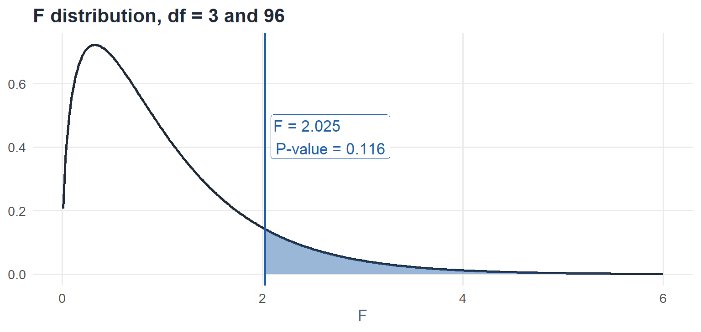
NoteDecision and conclusion
P-value = 0.116 \(>\) 0.05: fail to reject \(H_0\). There is not sufficient evidence that any of the four companies have different true mean AFT scores.
WarningWhich companies?
ANOVA does not say which means differ. That is Lesson 36 (Tukey).
Move the Data
Drag a dot to move one Soldier. Drag a company’s mean bar to move the whole company. Watch SSTr, SSE, \(F\), and the P-value.
Download the ANOVA Machine One HTML file. Opens in any browser, no internet needed.
Doing This in R
model <- aov(score ~ company, data = aft)
summary(model) Df Sum Sq Mean Sq F value Pr(>F)
company 3 3779 1259.7 2.025 0.116
Residuals 96 59732 622.2 | R output | ANOVA table |
|---|---|
company row |
Treatments |
Residuals row |
Error |
Df |
\(I - 1\) and \(n - I\) |
Sum Sq |
SSTr and SSE |
Mean Sq |
MSTr and MSE |
F value |
\(F\) |
Pr(>F) |
P-value |
Complete the Table
A battalion compares rifle qualification scores across four training methods, 10 Soldiers per method.
| Source | Sum of Squares | df | Mean Square | \(F\) |
|---|---|---|---|---|
| Treatments (Method) | 120 | 3 | ? | ? |
| Error | 432 | 36 | ? | |
| Total | 552 | 39 |
NoteHypotheses
\(H_0: \mu_1 = \mu_2 = \mu_3 = \mu_4\) versus \(H_a\): at least two of the method means differ.
NoteMean squares and F
\[\text{MSTr} = \frac{120}{3} = 40.00 \qquad \text{MSE} = \frac{432}{36} = 12.00 \qquad F = \frac{40.00}{12.00} = 3.333\]
NoteP-value
1 - pf(3.333, 3, 36)P-value = 0.030
NoteDecision and conclusion
0.030 \(\le\) 0.05: reject \(H_0\). There is sufficient evidence that at least two of the four training methods have different true mean qualification scores.
Board Problems
Problem 2: Ruck Times by Platoon
A company commander compares 12 mile ruck times (minutes) across three platoons, 12 Soldiers each.
Df Sum Sq Mean Sq F value Pr(>F)
platoon 2 84.6 42.30 2.014 0.149
Residuals 33 693.0 21.00
NoteQuestions
State \(H_0\) and \(H_a\).
Which number is MSE? What does it measure?
Decision and conclusion at \(\alpha = 0.05\).
The 1st Platoon’s sample mean is the fastest. Can the commander say 1st Platoon is faster than the others?
TipAnswers
\(H_0: \mu_1 = \mu_2 = \mu_3\) versus \(H_a\): at least two of the platoon means differ.
21.00, the
Residualsmean square: the variation in ruck times within each platoon.P-value = 0.149 \(>\) 0.05: fail to reject \(H_0\). There is not sufficient evidence that the platoons have different true mean ruck times.
No. ANOVA found no evidence of any difference, so the gap in sample means could be noise. (Even if we had rejected, ANOVA alone does not say which platoons differ: Lesson 36.)
Before You Leave
Today
- Many \(t\) tests inflate the chance of at least one false positive; ANOVA asks one question
- \(H_0: \mu_1 = \cdots = \mu_I\) versus \(H_a\): at least two differ
- \(F = \text{MSTr}/\text{MSE}\), P-value
1 - pf(F, I-1, n-I) - Reject \(H_0\): some means differ, but not which ones
Any questions?
Next Lesson
Lesson 36: ANOVA II
- 1, 2 Dec
- Devore 10.2
Upcoming Graded Events
- Project Products: Lesson 37 (3, 4 Dec)
- TEE: 15 to 18 Dec 2026